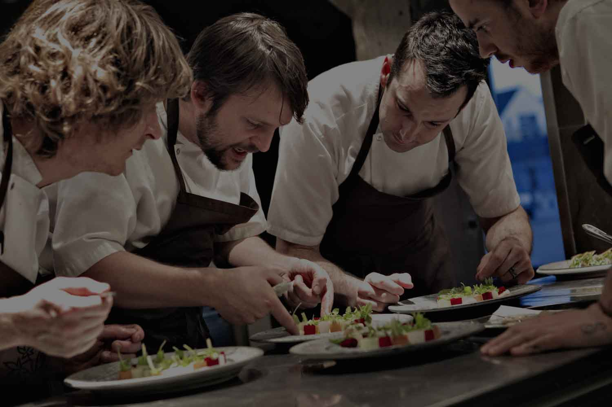

“ 和農夫及科學家維持緊密的互動，
能創造更新穎迷人的滋味。”
 能創造更新穎迷人的滋味。”
René Redzepi
現任 | NOMA 餐廳合夥人與主廚
米其林 | 兩顆星
René Redzepi
位置 | 丹麥 哥本哈根
菜色 | 新北歐料理
René Redzepi
網站 | noma.dk
口頭禪 | FUCK
-
NOMA 的開始
Clause Meyer 邀請 René Redzepi 一起創業，開始了 NOMA 的旅程，重新定義北歐料理。起初大家懷著看好戲的心態嘲笑他們，因為北歐十分寒冷，物產不豐，怎麼可能擁有多具特色又好吃的料理？
2003 -
成名的滋味
René Redzepi 靠著發酵與野生採集兩大特色，讓 NOMA 首度獲得世界第一餐廳的頭銜，得獎隔天 NOMA 收到十萬筆來自世界各地的線上訂位要求，愛好美食的顧客們蜂湧而至。但他說：儘管成名，我依舊懷疑自己的能力，這感覺是如此不真實。
2010 -
二度獲得世界第一餐廳頭銜
2011 -
三度獲得世界第一餐廳頭銜
2012 -
諾羅病毒爆發
廚房一位員工在出餐過程中，不小心將諾羅病毒傳染給 435 位在 NOMA 用餐的客人。NOMA 失去世界第一餐廳的頭銜。
2013 -
重返第一
NOMA 重振士氣，奪回世界第一餐廳寶座。Rene 在得獎感言時說到：每當人們問我，你到底怎麼做到這一切，我總是回應他們，是「我們」他媽的一起做到這一切。我知道我並不總是一個好相處的人，但我想在所有人面前向我的夥伴們說，你們就是我的夢幻隊伍，是我的靈感啟發。
2014
i
驚艷世界的秘密
發酵與採集
René 系統化的研究發酵技術並運用於料理中。
NOMA 擁有自己的發酵實驗室，
它不和餐廳在同一棟建築中，而是位在船上，
沈載著最具潛力的又或者很可能失敗的各種創新點子。
聽！是發酵的聲音
在 NOMA 實習過的廚師趙宇曾進到發酵實驗室參觀。
當時解說員將他帶進一個房間，燈都沒開，
一片烏漆麻黑，解說員對趙宇說：「你仔細聽！」
起先趙宇什麼也沒聽到，在一陣寂靜後，
他耳朵內開始浮現「波、波、波」的泡泡聲綿延不絕。
燈一開的剎那，他看見眼前是盡是正在發酵的食材，
裝在各種容器中，非常壯觀。
逼近採集者的極限
René 與許多野生食材採集者合作，
他們一起研究不同食材的可能性。
René 的堅持在無意間鞭策著採集者們將自己逼盡極限，
去探詢更多元的野生、在地食材。
他們之間的關係不像是老闆與員工，更像互相扶持的協作者，
開創更新穎的運用食材的方式。
也因為 René，餐飲界刮起野生採集的風潮。
休半年、開半年的快閃餐廳
2015 年開始，NOMA 到世界各地舉辦快閃餐廳。
René 認為這是一個能探索其他食材與文化的方式，
同時在旅行途中也讓團隊有更多培養感情的機會。
NOMA 快閃去了，丹麥怎麼辦？
當 NOMA 團隊到其他國家旅行的同時，
子品牌 108 就會代替 NOMA 在丹麥繼續營業，
人均價格也親民許多，大約是每人台幣 2000 元。


NOMA 2.0
René 希望能在 2017 年打造一個實驗性農場，
並在其中創造「生物多樣性」的理想。
René 表示，能夠在每個早晨起身，
到外頭去採些新鮮的巴西利是每個廚師的夢想。
即便這可能需要長達二十五年的時間才有機會損益兩平，
甚至在達成這個美好願景之前就失敗了，
但最糟的情況不過就是一無所有而已，
再重來一次就好了。